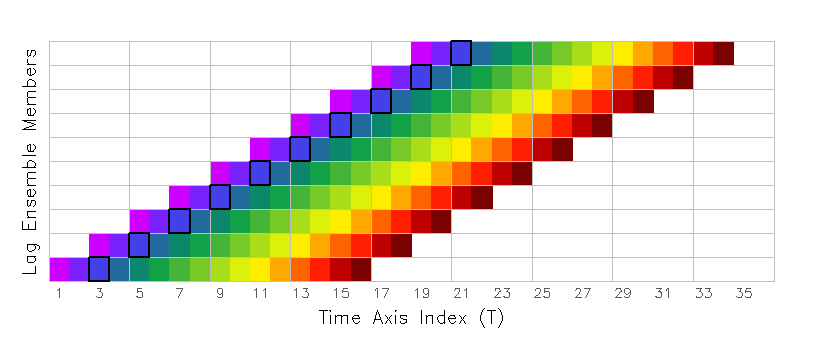
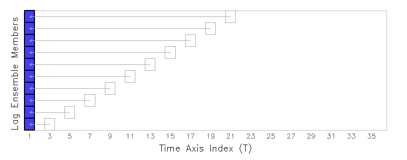
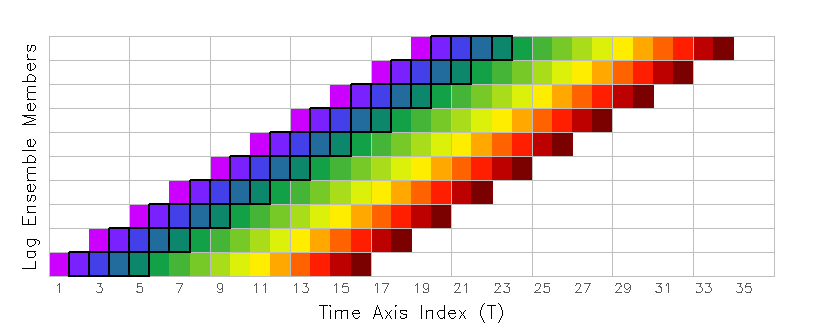
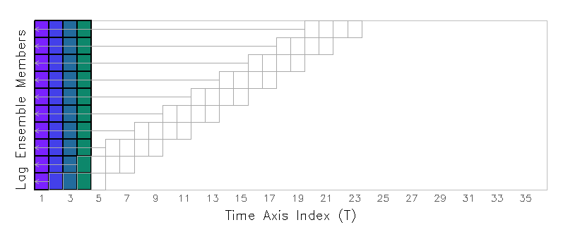

The time axis in the GrADS environment is a simple, linear, one-dimensional object, defined by its start time, a time increment, and its length. The ensemble axis in the GrADS environment is also a linear, one-dimensional object, but it can become complicated when the metadata for individual ensemble members is time axis related. Such is the case when individual ensemble members have a start time and a length that is different from the defined time axis. For these kinds of data sets, the notion of "initial time" takes on a subtlety: clarifying the difference between the first time step in the defined time axis, and the first time step for an individual member.
Beginning with version 2.0.a7, GrADS has a new interface for making the clarification between absolute time axis indices and indices that are offsets from an ensemble member's initial time. It has been implemented in the expression syntax as part of a complete variable declaration, which has three components:
abbrev.file#(dimexpr,dimexpr,...) where:
abbrev is the abbreviation for the variable as
specified in the
data descriptor file
file# is the file number that contains
this variable. If file# is absent, GrADS assumes the default file number. dimexpr is a dimension expression that locally
modifies the current dimension environment.
The new interface allows a dimexpr that specifies an offset
from the variable's initial time (which may be different for each ensemble member). The syntax is "offt" followed by "=/+/-" followed by an offset value.
The "offt" dimension override is currently supported only for variables associated with a data file -- it will not work with defined variables or for dimension expressions given as arguments to functions such as ave or sum.
For the purposes of explaining how to use expressions that employ the "offt" dimension override, we use a lag ensemble data set that contains 10 members. Each member is a 96-hour forecast, with output every 6 hours, and initialized at 12-hour intervals. The figure below illustrates the coverage of all 10 members in the Time-Ensemble domain; the rainbow colored boxes represent indivual time steps in each member.
Suppose you want to extract the 12-hour precipitation forecast from each ensemble member -- this is the third time step from the initial time of each forecast, which would be a diagonal slice through the domain, highlighted in the figure below with a solid black outline:

The first step is to set the time dimension to a fixed value by using 'set time' or 'set t' and set the ensemble dimension to include all the desired members:
'set t 1'
'set e 1 10'
Next, determine the offset value that will give you the time index you desire. In this example, we want the third time step, which is an offset of two from the initial time, so our offset value is 2. (If you want the first time step of each member, the offset value would be zero.) Now display the variable, using parentheses attached to the variable name to override the time dimension value, specifying "offt=" with the offset value:
'd p(offt=2)'
GrADS will retrieve the third valid time step from each ensemble member (GrADS knows the start time of each member because that information is provided in the EDEF entry of the data descriptor file). GrADS then aligns all the retrieved values into a single column and returns a result grid with a fixed T and a varying E dimension:

Note that the original valid time of the precipitation value from each member is not retained ... the new valid time associated with this result is taken from the current dimension environment. In this example, the new valid time is first time step in the data set, since the time dimension had been fixed with the 'set t 1' command.
Now we expand our data request to include more than one time step. Suppose you want to extract the precipitation values over the first 24 hours of each ensemble member -- you need the second, third, fourth, and fifth time step from each forecast. This request would be a time-varying diagonal slice through the domain, highlighted in the figure below with a solid black outline:

This is accomplished by using the tloop function with an expression that contains the "offt" dimension override. Begin by setting time to be a varying dimension in the dimension environment. The ensemble dimension is also set to include all desired members:
'set t 1 4'
'set e 1 10'
The tloop function will evaluate the expression at fixed times, then reconstruct the time series to obtain a final result that is time varying.
At each step, when tloop is evaluating the expression at a fixed time, it will override the time dimension value with a time offset value instead. The tricky part is creating the "offt" dimension override expression, which must be relative to the T index of the dimension environment. In our example, want the second, third, fourth, and fifth time steps which correspond to offset values of 1, 2, 3, and 4. Thus, our offset values are equivalent to the T index values of our set dimension environment, so the final expression will be:
'd tloop(p(offt+0))'
The dimension override expression, in this case "offt+0", is a kind of formula for calculating the offset value using the current t value of the dimension environment. In this case, when t=1, the offset value will be t+0 or 1; when t=2, the offset value will be t+0 or 2; etc. This will achieve the desired result -- as tloop builds the time-varying result, it steps through the desired offset values, retrieving the second, third, fourth, and fifth timesteps of each ensemble member, and stacking them in an aligned grid:

Note that if the dimension override expression contained "offt=0", then this would indicate a straightforward assignment of the time offset value that does not depend on the current dimension environment. When using tloop to retrieve a time-varying diagonal slice, the "offt" dimension override must be a relative expression (i.e. "+/-value") instead of an assignment expression (i.e. "=value"), otherwise GrADS will retrieve the same offset value for each time step -- this would not be the desired result.
Now we take our time-varying example one step further. Suppose you want to calculate the accumulated precipitation over the first 24 hours of each ensemble member -- you need to add the second, third, fourth, and fifth time step from each forecast, which would require summing over the time-varying diagonal slice discussed in the previous section. One way to do this is to create a defined variable that contains the time-varying aligned grid with tloop (as described above), then sum over that defined variable:
'set t 1 4'
'set e 1 10'
'define pnew = tloop(p(offt+0))'
'set t 1'
'd sum(pnew,t=1,t=4)'
A more elegant and economical way to achieve the same result is to let the sum function do the work that the tloop function would do -- sum loops over each time evaluating the expression at a fixed time and returns the sum of all values:
'set t 1'
'set e 1 10'
'd sum(p(offt+0),t=1,t=4)'
Remember that the "offt" dimension override is supported only for variables associated with a data file -- it will not work with defined variables or for dimension expressions given as arguments to functions such as ave or sum. The following expression will return an error message:
'd sum(p,offt=1,offt=4)' <=== THIS IS INCORRECT